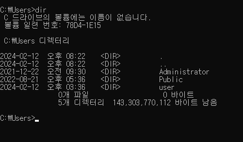
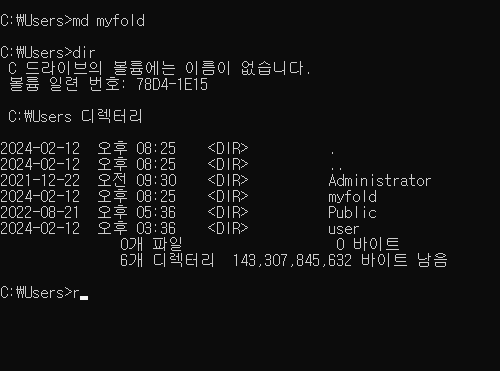
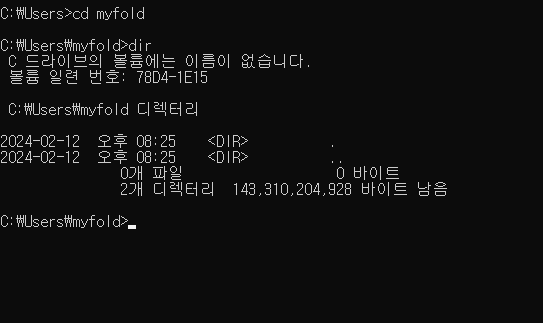
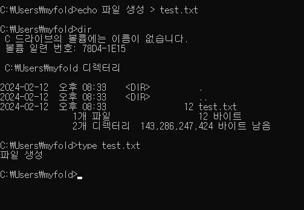
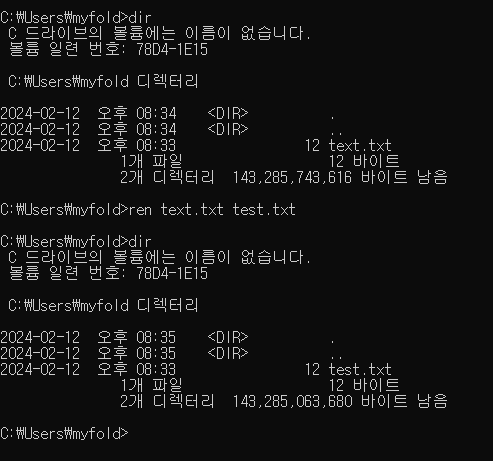
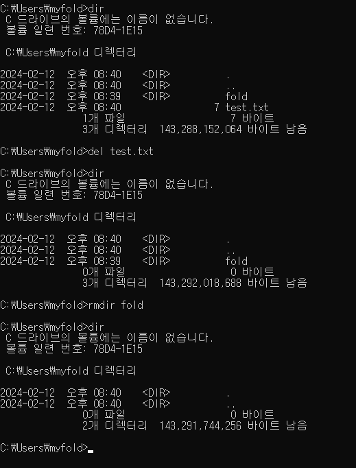

컴퓨터의 시스템의 자원들을 효율적으로 관리하기 위해 만들어졌다.
처리능력향상 : 일정한 시간 내에 처리하는 일의 양을 의미한다.
사용 가능도 향상 : 언제든지 사용 가능해야 함을 의미한다.
신뢰도 향상 : 문제를 정확히 처리하는지를 의미한다.
반환 시간 단축 : 문제를 빠르게 처리하는지를 의미한다.
프로세서
기억장치
입출력장치
자원 관리
Windows
Linus
macOs
MS-DoS
그래픽 사용자 운영체제의 기능(GUI)
선점형 멀티태스킹
PNP(Plug and Play) : USB를 연결하면 자동으로 실행
OLE(Object Linking and Embedding) : 개체 삽입 응용 프로그램 간의 자료 공유
255자의 긴 파일명 : DOS때는 8자의 파일명을 지원하였으며 한글의 경우 4글자였다.
벨 연구소에서 개발한 운영 체제
윈도우를 제외하면 모든 OS의 시초
멀티유저용 서버 운영체제(현재는 개인용 데스크탑이나 임베디드용으로도 사용)
C언어로 만들어져 이식성이 좋다.
커널 : 관리자 역할이다
쉘 : 커널에서 수락한 일을 수행한다
Utility Program : 컴파일러 ,디버거 등이 있다.
부트블록 : 부팅시 필요한 코드를 저장하고 있다.
슈퍼블록 : 파일시스템에 대한 정보를 저장하고 있다.
i-nodo : 파일이나 디렉토리에 대한 정보를 저장하고 있다.
UNIX를 기반으로 만들어진운영체제이다
오픈 소스로 안드로이드도 LINUX커널을 가져다 쓰고있다
다양한 배포판이 존재한다
UNIX를 기반으로 apple사에서 개발한 mac전용 운영체제이다
dir
현재 폴더의 목록을 확인한다
md [파일명]
폴더를 생성한다.
cd [폴더명]
폴더 안으로 이동한다
echo [내용] > [파일명].txt
텍스트 파일을 생성한다
ren [현재 파일명] [새로운 파일명]
파일의 이름을 변경한다.
del [파일명]
파일을 삭제한다.
rmdir [폴더명]
폴더를 삭제한다.
TCP/IP 프로토콜을 기반으로 하여 전 세계 수많은 컴퓨터와 네트워크들이 연결된 광범위한 컴퓨터 통신망
인터넷에 연결된 모든 컴퓨터 자원을 구분하기 위해 고유주소인 IP주소를 사용한다
4부분으로 나누며 각 자리수는 10진수로
표현한다.
각 부분은 8bit씩 총 32bit로 구성되어 있다.
'클래스'라는 구성 단위를 가지고 있다
주로 c클래스를 사용하였다. 현재는 IPv6를 사용하고 있다.
8부분으로 나누며 각 자리수는 16진수로
표현한다.
각 부분은 16bit씩 총 128bit로 구성되어 있다.
0000으로 나타나는 부분은 0으로 축약이 가능하다.
0:0 부분은 생략이 가능하다 ex)2001:0DB8:0000:0000:0000:0000:1274:ab57
=> 2001:0DB8:0:0:0:0:1274:ab57
=> 2001:0DB8::1274:ab57으로 축약이 가능하다.
유니캐스트 : 고유 주소로 식별된 하나의 네트워크 목적지에 1대1로
메시지를 전송하는 방식이다.
멀티캐스트 : 한 번의 송신으로 메시지나 정보를 목표한 여러 컴퓨터에
동시에 전송하는 방식이다.